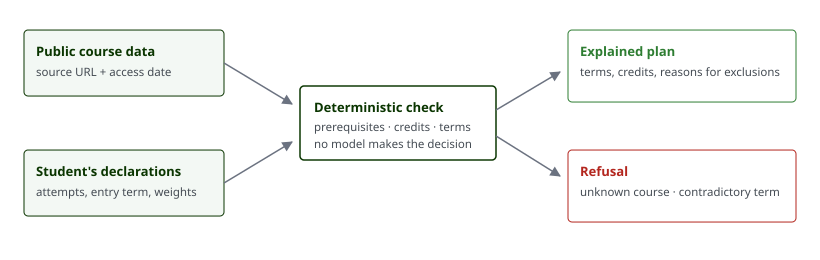

Course Info
One course dossier: prerequisite and co-requisite tree, mutex set, eligibility notes, official wording and provenance. A prerequisite the dataset cannot express stays visible as an unverified clause instead of silently passing.
HKU · AILT9019 AI Literacy II · student project
HKU Course Weaver turns public course information and a student's own declarations into an auditable view of course relationships and a concrete-term study plan. It shows the official wording, the source URL and the date the source was read.
One primary user group: HKU undergraduates. One concrete task: can I take these courses in the terms I have left, and what has to happen first? One bounded pipeline: declared input in, explained plan or refusal out.
This page is static documentation. The working system is a Java service that runs locally or in Docker; the videos show that system running.
It gives no subjective course-selection advice, never ranks courses, never chooses courses for you, never decides graduation eligibility, never resolves unrelated credit conflicts and never makes an official academic decision. The student reports their own record; the product does not read it from SIS.
One course dossier: prerequisite and co-requisite tree, mutex set, eligibility notes, official wording and provenance. A prerequisite the dataset cannot express stays visible as an unverified clause instead of silently passing.
Requirements and the printed sample study plan, kept read-only and linked to the official regulation. Comparing a plan never overwrites the student's own plan.
Attempts placed on real academic years and terms, not floating relative labels. The board re-checks chains, credit load, timetable clashes where public data exists, and the weighted one-year wishlist.
Ordered local and cloud sources, session overrides, encrypted profile import and an AI console that prepares a user-supplied model to research public course information without seeing personal records.
Accounts, the local encrypted profile and the trilingual interface are shared by all four surfaces. The interface is available in English, Traditional Chinese and Simplified Chinese.



Course codes, the student's declared attempts, entry term, programme and optional wishlist weights.
Deterministic checks for prerequisites, co-requisites, mutex restrictions, eligibility wording, credits and terms.
An explained relation view, a concrete-term plan, a refusal, or a neutral set of feasible options with the reasons attached.
The language model, when configured, only extracts requirement text from public sources. Scheduling, credit arithmetic and every verdict remain deterministic code, so the same input gives the same answer.
source_url and an accessed_date.
If two sources disagree, the newer version wins; at equal freshness, a declared
authority breaks the tie; otherwise ingestion stops for a human.
Requirements: Java 21+ and Maven. There is no npm build, no hosted account database and no SIS credential. The repository README contains the full setup, test and troubleshooting instructions.
mvn -B clean verify
java -jar courseweaver-server/target/courseweaver-server-0.1.0-SNAPSHOT.jar
# open http://localhost:8080/The repository is restricted to the course teaching team. This public page and the two videos are the public evidence available without repository access.
AI coding agents supported implementation, test writing, translation drafting and audit passes. A human remained accountable: every change was reviewed, the full test suite was run before submission, and claims in the report were checked against code, data and the running interface. The product itself is not a multi-agent system; the optional model call is bounded to extracting public requirement text.
| Public page | hungry-m.github.io/hku-course-weaver-site |
|---|---|
| Repository | github.com/Hungry-M/HKU-Course-Weaver (private to the teaching team) |
| Presentation | youtu.be/6d0mygnQH7E |
| Demo | youtu.be/-hJEeITIujg |